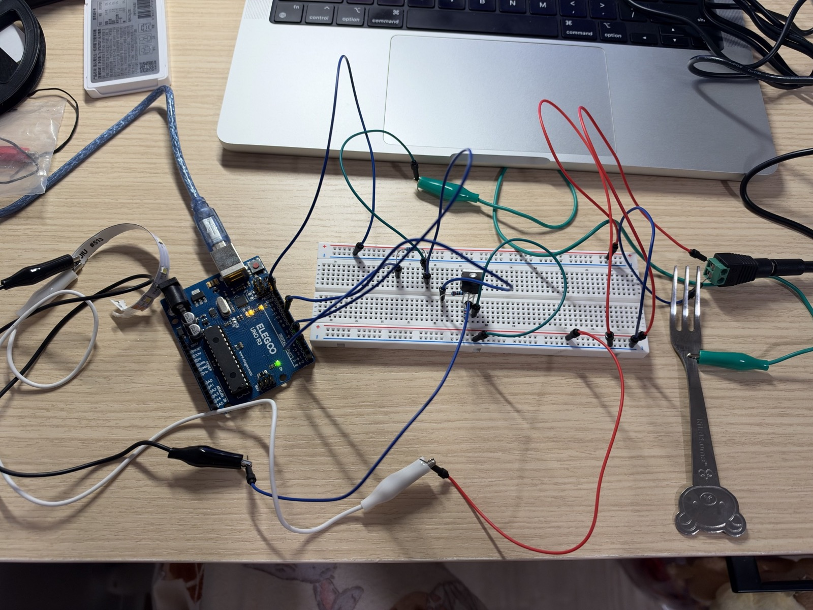
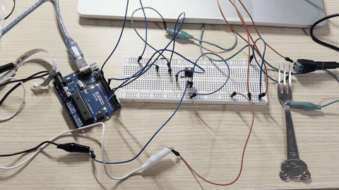

A metal fork senses touch and fades a 12 V LED strip through an N-channel MOSFET.
Project overview
Touch to brighten. Release to fade.
The USB-powered Arduino Uno reads the fork with the CapacitiveSensor library. Its PWM signal controls the IRLZ44N gate, and a separate 12 V adapter supplies the LED strip. The two supplies share a ground reference.
The 1 MΩ resistor gives the library a measurable RC timing change. The 220 Ω resistor limits transient gate charging current and the 10 kΩ pull-down keeps the MOSFET off while D9 is high impedance. The drain (D) connects to the LED strip, and the source (S) connects to the adapter’s negative terminal.
The strip positive lead goes to +12 V. Its negative lead connects to the drain (pin 2), and the source (pin 3) returns to adapter negative and Arduino ground.
When D9 goes high, the MOSFET completes the strip’s return path. PWM changes how long that path conducts during each cycle.
02
Build
Physical circuit

The metal fork is clipped to the D4 receive node. The Uno receives power over USB, and the barrel-jack connection supplies the strip’s 12 V circuit.
D2 / D4D2 → 1 MΩ → D4 and fork
D9 / GD9 → 220 Ω → gate (pin 1)
D / SStrip negative → drain (pin 2) → source (pin 3) → common ground
Gate pull-downGate → 10 kΩ → common ground
03
Test
Circuit operation

Animated recording of the assembled circuit. The fork is on the right and the LED strip is on the left.
Holding the fork increases the PWM value by 5 each update, up to 255. Releasing the fork decreases it by 5 each update, down to zero.
Arduino code
// Import the library that measures capacitive touch.
#include <CapacitiveSensor.h>
// Set D2 as the send pin and D4 as the receive pin.
CapacitiveSensor touchSensor(2, 4);
// Use D9 to send PWM to the MOSFET gate.
const int ledPin = 9;
// Use a threshold between the idle and touched sensor readings.
const long touchThreshold = 450;
// Track the current PWM level, starting at zero.
int brightness = 0;
// Change the PWM level by five counts on each loop.
const int fadeStep = 5;
// Run this setup once at startup.
void setup() {
// Switch D9 from high-impedance input to output. Its reset output latch is LOW.
pinMode(ledPin, OUTPUT);
// Set the initial duty cycle to zero.
analogWrite(ledPin, 0);
// Open the serial connection at 9600 baud.
Serial.begin(9600);
}
// Repeat the sensor reading and brightness update.
void loop() {
// Sum ten raw capacitive sensing samples.
long touchValue = touchSensor.capacitiveSensorRaw(10);
// Print the label for the sensor reading.
Serial.print("Sensor: ");
// Print the current sensor reading.
Serial.print(touchValue);
// Increase brightness for a valid reading above the touch threshold.
if (touchValue >= 0 && touchValue > touchThreshold) {
// Stop increasing at the maximum PWM value of 255.
brightness = min(brightness + fadeStep, 255);
}
// Fade down when released or when the sensor reports an error.
else {
// Stop decreasing at the minimum PWM value of zero.
brightness = max(brightness - fadeStep, 0);
}
// Update the MOSFET gate duty cycle on D9.
analogWrite(ledPin, brightness);
// Print the label for the PWM level.
Serial.print(" | Brightness: ");
// Print the PWM level and end the line.
Serial.println(brightness);
// Space out PWM updates to make the fade visible.
delay(15);
}
04
Analysis
Voltage and current
I used 1 MΩ between D2 and D4 to make small changes in the fork’s capacitance easier to detect. Since τ = RC, an example change of 20 pF adds 20 µs to the time constant. With 5 V across the resistor, the peak current is 5 V / 1 MΩ = 5 µA.
I used 220 Ω in series with the MOSFET gate to limit the brief charging current when D9 goes high. For a target of about 25 mA, 5 V / 25 mA = 200 Ω. With 220 Ω, the ideal peak is 5 V / 220 Ω ≈ 22.7 mA. The 10 kΩ pull-down holds the gate near 0 V at startup. To keep steady current below 0.5 mA when D9 is high, the pull-down needs to be at least 5 V / 0.5 mA − 220 Ω = 9.78 kΩ. With 10 kΩ, the steady current is about 0.49 mA and the gate voltage is about 4.89 V.
At full brightness, the LED strip sees close to 12 V. When off, the strip current is close to zero and the drain can sit near 12 V. The strip’s full-on current can be estimated by dividing its rated power by 12 V. The rated power and measured current are unavailable.
05
Assignment questions
Additional questions
01
Maximum current between pins 2 and 3
My MOSFET is the IRLZ44N. Pin 2 is drain and pin 3 is source. Its absolute maximum continuous drain current is 47 A at a case temperature of 25 °C and VGS = 10 V. The pulsed rating is 160 A subject to the pulse and junction-temperature conditions in the datasheet. The 47 A figure assumes controlled case temperature and higher gate drive than the Uno provides.
02
DC motor with a flyback diode
The diode’s banded cathode faces +12 V. Its anode connects to the drain so motor current can recirculate when the MOSFET switches off. A 100 µF bulk capacitor supports the motor supply during load changes. A 100 nF ceramic capacitor bypasses higher-frequency noise.
The Uno supplies 5 V to pin 16 for logic. An external 6 V supply powers pin 8 and the two motors. Pins 4, 5, 12 and 13 share Arduino and supply ground.
Two 6 V Pololu #992 motors are an example load. Their specified stall current is about 0.36 A each, below the L293D’s 0.6 A continuous per-channel rating. The driver’s output voltage drop reduces the voltage across the motor. TI L293D datasheet · Pololu #992 motor specifications.
// Configure the two PWM enables and four direction signals as outputs.
setup: EN_A = D5, EN_B = D6, A1 = D2, A2 = D3, B1 = D4, B2 = D7
// Turn off both bridges before changing direction.
for directions in [(FWD, FWD), (REV, REV), (FWD, REV), (REV, FWD)]:
// Coast long enough for the motors to slow before reversing.
PWM(EN_A, 0), PWM(EN_B, 0)
wait 500 ms
// Set each bridge: FWD = (HIGH, LOW), REV = (LOW, HIGH).
write_pair(A1, A2, directions.first)
write_pair(B1, B2, directions.second)
// Run both motors for two seconds.
PWM(EN_A, 200), PWM(EN_B, 200)
wait 2 seconds
// Disable both bridges at the end.
PWM(EN_A, 0), PWM(EN_B, 0)
04
AI use and reflection
Debugging the Arduino code. I used ChatGPT to debug the capacitive touch readings and the PWM fade logic. It helped me use the Serial Monitor to compare the sensor reading with the brightness value and check what the code was sending to the LED strip.
Building the website. I used Codex to build this assignment page and present the circuit photo, schematics, Arduino code, and demonstration GIF.